|
|
|
All of the text in your write-up should be in your own words. If you need to add additional HTML features to this document, you can search the http://www.w3schools.com/ website for instructions. To edit the HTML, you can just copy and paste existing chunks and fill in the text and image file names appropriately.
If you are well-versed in web development, feel free to ditch this template and make a better looking page.
Here are a few problems students have encountered in the past. Test your website on the instructional machines early!
"./images/image.jpg"Do NOT use absolute paths, such as
"/Users/student/Desktop/image.jpg"
.png != .jpeg != .jpg != .JPG
Here is an example of how to include a simple formula:
a^2 + b^2 = c^2
or, alternatively, you can include an SVG image of a LaTex formula.
YOUR RESPONSE GOES HERE
The rendering pipeline starts in PathTracer::raytrace_pixel(x, y). For each pixel, I generate
ns_aa subpixel samples using gridSampler->get_sample(), map each sample from image-space
coordinates to normalized sensor coordinates in [0,1] x [0,1], and call
camera->generate_ray(...).
In Camera::generate_ray, the normalized sensor point is mapped onto the camera sensor plane at
z=-1 using horizontal and vertical FOV. The direction is transformed from camera space to world space
with c2w, normalized, and packed into a ray with clip bounds [nClip, fClip].
Each camera ray is passed to est_radiance_global_illumination, which calls BVH traversal and primitive
intersection routines. Triangle and sphere primitives test intersections only within
[ray.min_t, ray.max_t], and when a hit is found, ray.max_t is updated to the nearest hit so
farther candidates can be rejected early. The pixel value stored in sampleBuffer is the average radiance
over all subpixel samples.
I implemented triangle intersection using the Moller-Trumbore formulation. Let the triangle edges be
e1 = p2 - p1 and e2 = p3 - p1, and let the ray be
o + t d. Solving
o + t d = p1 + b1 e1 + b2 e2 gives t and barycentric coordinates
b1, b2.
I compute a determinant term first; if it is near zero, the ray is parallel to the triangle plane and there is no
hit. Otherwise I compute t, b1, and b2. The hit is valid only if
b1 >= 0, b2 >= 0, b1 + b2 <= 1, and
t lies in [ray.min_t, ray.max_t].
For has_intersection, I only return whether such a valid hit exists and clamp
ray.max_t to the hit distance. For intersect, I also fill the intersection record:
hit time t, interpolated normal using barycentric weights
b0 = 1 - b1 - b2, b1, b2, plus primitive and BSDF pointers.
|
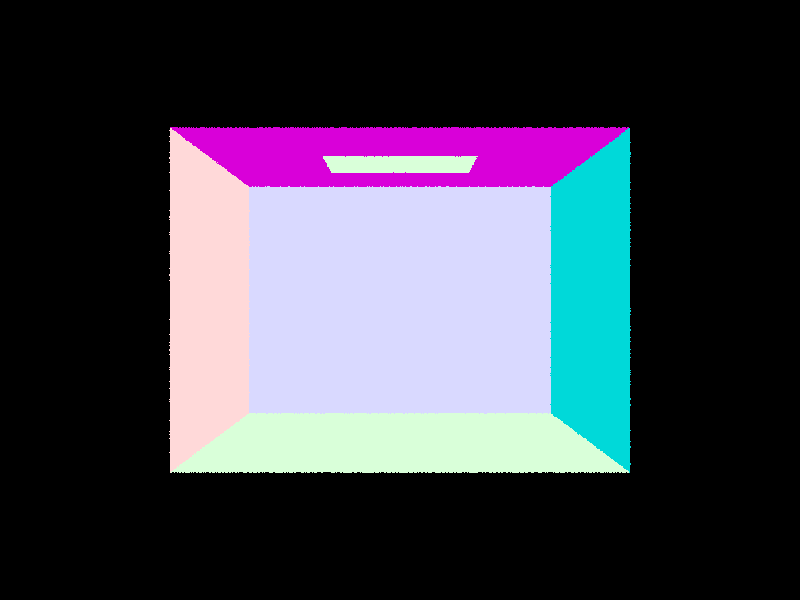 |
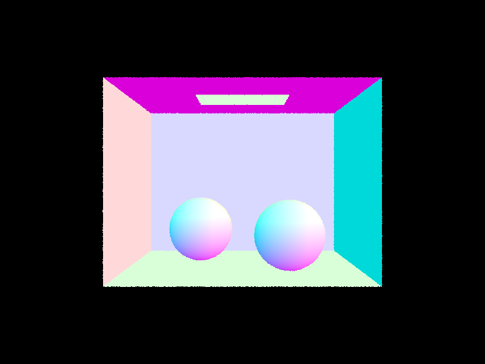 |
|
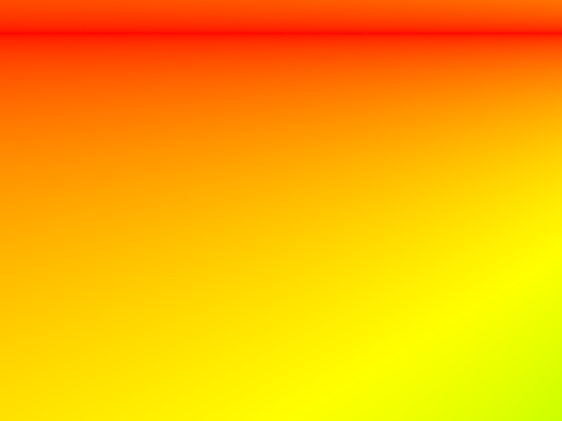 |
I build the BVH recursively over a contiguous range of primitive iterators [start, end). For each
recursive call, I first compute the node bounding box by unioning all primitive bounding boxes in the range. If the
number of primitives in the range is at most max_leaf_size, I create a leaf node and store
start and end directly in that node.
Otherwise, I compute a centroid bounding box and choose the split axis as the centroid axis with largest extent
(x/y/z). My split heuristic is centroid midpoint splitting: I partition primitives by whether their centroid is less
than the centroid midpoint on that axis. This is simple and works well for this assignment.
To avoid degenerate recursion (all primitives falling on one side), I check if partition returns an empty side
(mid == start or mid == end). In that case I fall back to a median split using
nth_element, which guarantees progress and prevents infinite recursion. I then recurse on left and right
ranges and assign the two children to the current interior node.
|
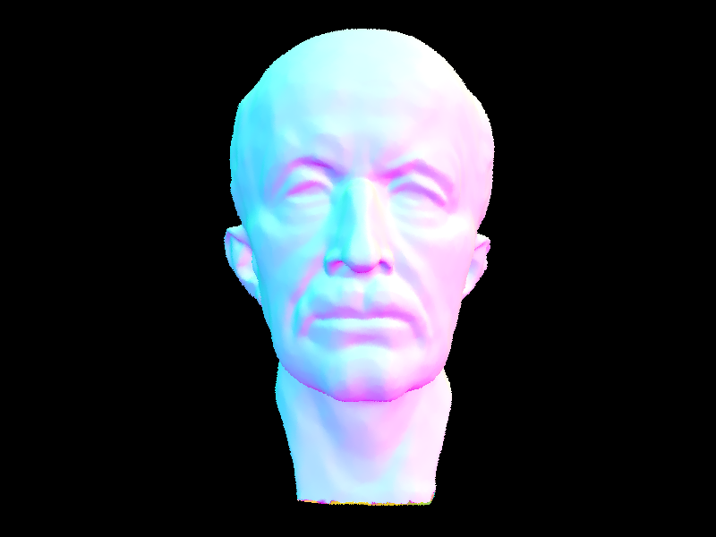 |
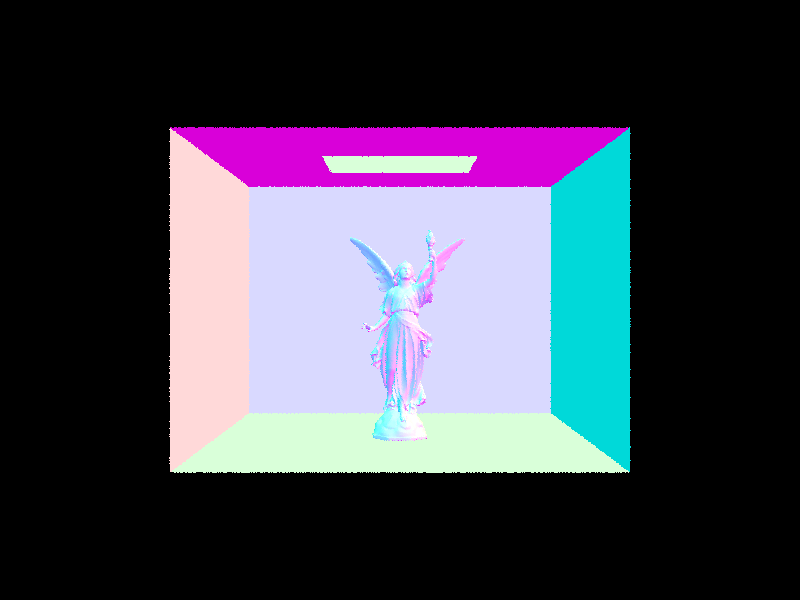 |
|
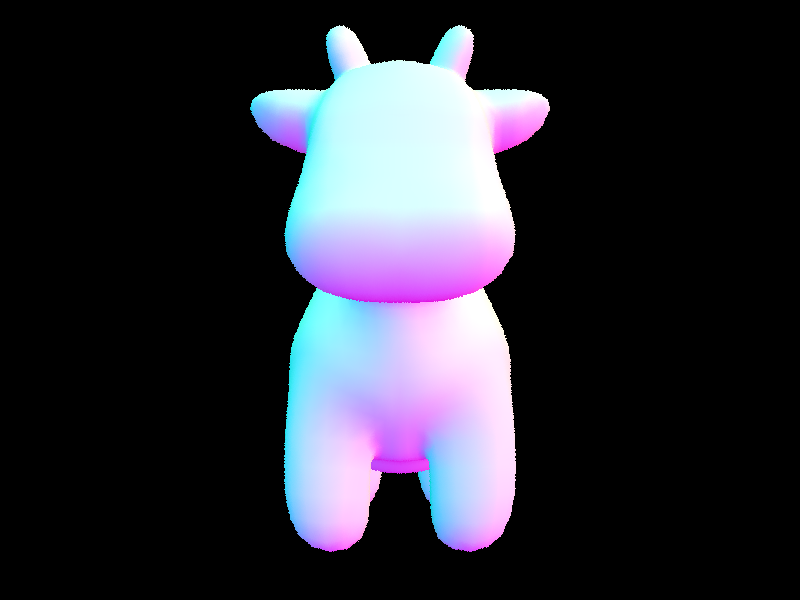 |
I measured rendering time at 800x600 with -t 8 and normal shading. Before BVH traversal
(baseline behavior that effectively tested all primitives), cow.dae took 7.8282s. After
implementing BVH construction + bbox test + recursive traversal, cow.dae dropped to
0.0366s, which is about a 214x speedup. With BVH traversal enabled, larger scenes were
also interactive: maxplanck.dae rendered in 0.0511s and CBlucy.dae in
0.0316s. The intersection-statistic drop is also clear (~1201 to ~2.55
intersection tests per ray on cow), showing that BVH successfully prunes most primitive tests and changes the
practical cost from near-linear primitive scanning to traversal over a much smaller set of candidate nodes.
I implemented two estimators for one-bounce direct illumination.
Uniform hemisphere sampling (estimate_direct_lighting_hemisphere): at each hit point, I sample
random incoming directions uniformly over the local hemisphere with
pdf = 1/(2π). For each sampled direction, I cast a shadow ray from hit_p with
min_t = EPS_F. If the shadow ray hits an emissive surface, I accumulate
f(wo, wi) * Li * cos(theta) / pdf, then average by the number of samples.
Light importance sampling (estimate_direct_lighting_importance): instead of sampling all
directions, I sample each light directly via light->sample_L(...), which provides
wi, distToLight, and light-space pdf. I cast a shadow ray with
min_t = EPS_F and max_t = distToLight - EPS_F to test visibility to the sampled light
point. If unoccluded and in the positive hemisphere, I accumulate the same reflection-equation term. Delta lights are
sampled once; non-delta lights are sampled ns_area_light times and averaged.
The wrapper one_bounce_radiance switches between the two methods using
direct_hemisphere_sample, and est_radiance_global_illumination returns
zero-bounce emission plus one-bounce direct lighting.
| Uniform Hemisphere Sampling | Light Sampling |
|---|---|
|
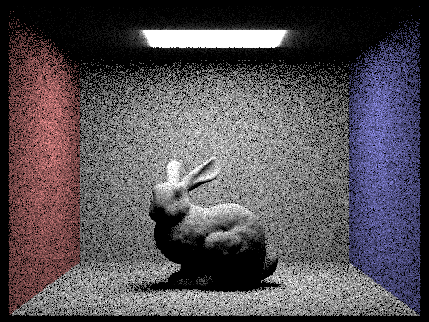 -s 16 -l 8 -H |
-s 16 -l 8 (importance sampling) |
|
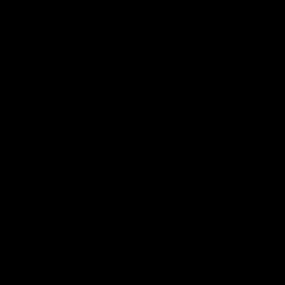 -s 16 -l 8 -H |
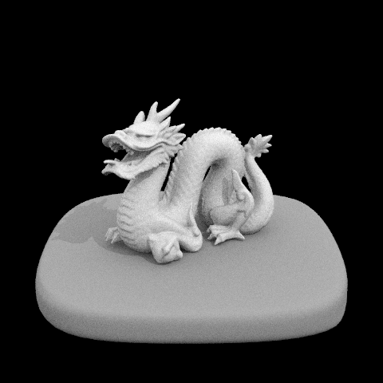 -s 16 -l 8 (importance sampling) |
-s 1 -l 1 |
-s 1 -l 4 |
-s 1 -l 16 |
-s 1 -l 64 |
Scene used: CBbunny.dae with light sampling (importance sampling), fixed at
-s 1. As -l increases from 1 to 4, 16, and 64, variance in the soft-shadow region under
the bunny and on the back wall drops substantially. With -l 1, penumbra boundaries are very noisy;
-l 4 already stabilizes the shadow shape; -l 16 makes shadow gradients much smoother; and
-l 64 gives the cleanest soft shadow among these four while preserving the same mean illumination.
This matches Monte Carlo behavior: more light samples reduce estimator variance for area-light integration.
For the same sample settings, light sampling is significantly less noisy than uniform hemisphere sampling because most
samples are concentrated in directions that actually contribute light. In hemisphere sampling, many sampled directions
do not hit the light source at all, so they contribute zero and waste samples, which appears as heavy grain (especially
in indirect-looking dark regions and soft shadow boundaries). In contrast, importance sampling draws rays from each
light directly, then only uses a visibility test (shadow ray) to decide whether that contribution is blocked. This
dramatically improves sample efficiency and supports delta lights (e.g., point/directional) that hemisphere sampling
would almost never hit by random direction sampling. All screenshots in this section were generated by
pathtracer output files via the -f flag (not OS-level screenshots).
I implemented indirect illumination in PathTracer::at_least_one_bounce_radiance and connected it to
est_radiance_global_illumination. In raytrace_pixel, each primary ray is initialized with
ray.depth = max_ray_depth so recursion can stop correctly. For each hit point, I:
(1) build local shading coordinates (o2w, w2o) and compute w_out;
(2) add one-bounce direct lighting through one_bounce_radiance based on the
isAccumBounces setting;
(3) sample one new incoming direction from the BSDF with sample_f, obtaining
w_in, pdf, and f;
(4) trace a bounce ray from hit_p using min_t = EPS_F and depth-1;
(5) recursively evaluate radiance at the next hit and accumulate
f * L_next * cos(theta) / pdf (with Russian Roulette continuation correction in Task 3).
In est_radiance_global_illumination, the final return is
zero_bounce_radiance + at_least_one_bounce_radiance (if depth > 0). This produces full global
illumination including color bleeding and multi-bounce energy transfer.
|
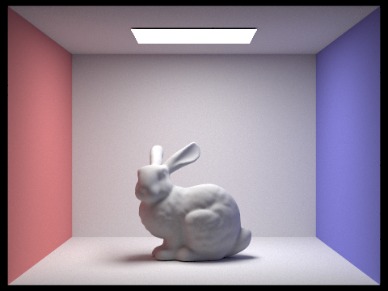 |
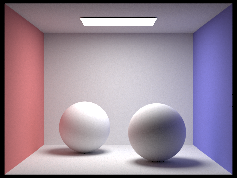 |
|
|
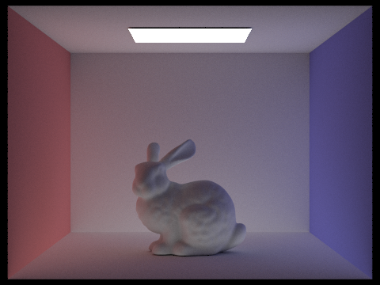 |
I generated these two views by temporarily editing
PathTracer::at_least_one_bounce_radiance(...):
(1) only direct: return one_bounce_radiance(r, isect) immediately, skipping recursion;
(2) only indirect: keep the recursive sampling path, but remove the direct-term accumulation from
L_out.
The direct-only result preserves first-hit lighting and clear primary shadows, but misses multi-bounce energy transfer.
The indirect-only result is much dimmer and smoother, highlighting bounced light in shadowed regions and subtle color
bleeding. After exporting both images with -f, I restored the original full implementation
(direct + indirect) for subsequent parts.
|
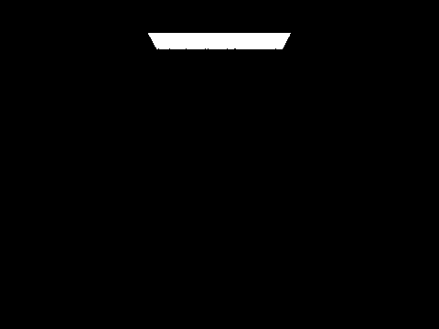 |
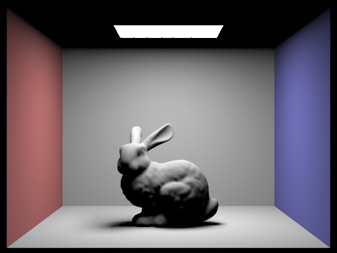 |
|
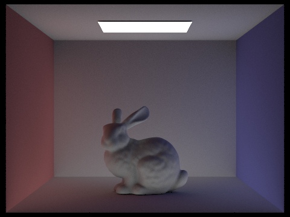 |
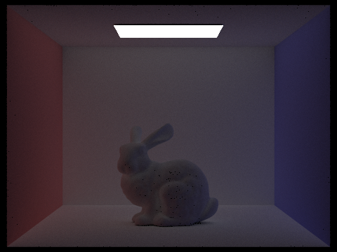 |
|
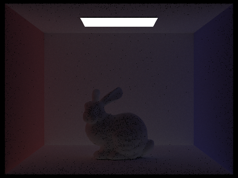 |
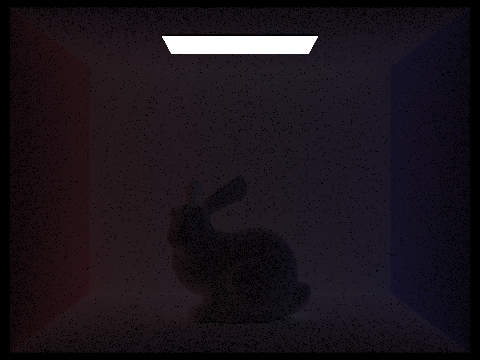 |
In the 2nd bounce image (m=2), indirect transport first becomes clearly visible: energy reaches regions
that do not see the emitter directly, so shadows get a soft fill and local contrast becomes more realistic. In the
3rd bounce image (m=3), the contribution is weaker per bounce, but it smooths global tone and reinforces
interreflection/color bleeding. Compared with rasterization (without dedicated GI approximation), these higher-order
bounces are what make occluded regions look physically plausible rather than unnaturally dark.
|
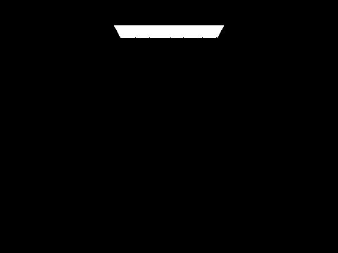 |
|
|
|
|
|
|
|
|
|
|
|
|
|
|
The accumulated row (top two rows) gets progressively brighter/stabler as max depth increases because each image
includes all bounces up to m. The unaccumulated row (bottom two rows) isolates a single bounce order, so
brightness drops as bounce index increases while revealing where specific transport orders contribute.
|
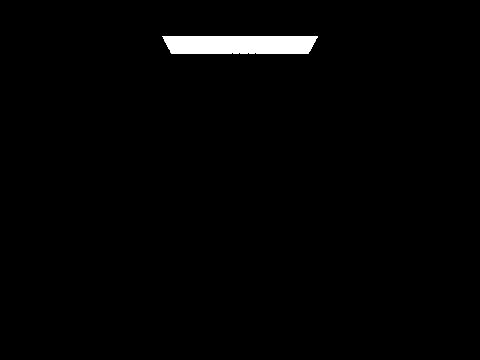 |
|
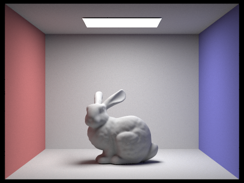 |
|
|
|
|
The m=100 result is visually very close to the moderate-depth results, showing that Russian Roulette
terminates long paths while keeping the estimator unbiased in expectation.
|
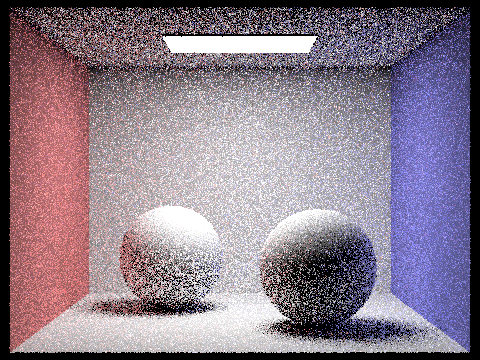 |
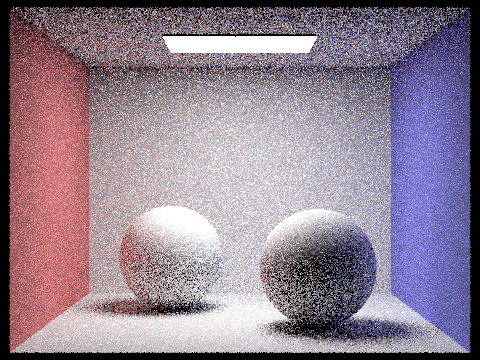 |
|
|
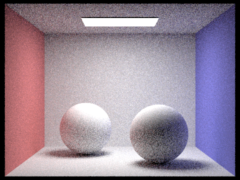 |
|
|
|
|
|
I used the spheres_rate_* set for the required 1/2/4/8/16/64/1024 sweep (with l=4) and
included one bunny_rate_* result as an extra reference from the same rendering setup. As sample count
increases, Monte Carlo variance drops and high-frequency noise in penumbra/indirect-light regions becomes progressively
smoother, with diminishing visual change from 64 to 1024 spp.
Adaptive sampling allocates more samples to high-variance pixels (typically edges, shadow boundaries, and
glossy/indirect-light regions) and fewer samples to already-converged smooth regions. Instead of forcing every
pixel to use the full sample budget, we estimate whether the current pixel mean is statistically stable and stop
early if it is.
I implemented this in PathTracer::raytrace_pixel in src/pathtracer/pathtracer.cpp.
For each sampled camera ray, I evaluate radiance and convert it to scalar illuminance
x_k = radiance.illum(). I track:
s1 = Σ x_k, s2 = Σ x_k^2, and current sample count n.
Every samplesPerBatch samples (here 32), I compute:
μ = s1 / n,
σ² = (s2 - s1^2 / n) / (n - 1),
I = 1.96 * sqrt(σ² / n).
If I <= maxTolerance * μ (here tolerance 0.05), the pixel is considered converged and sampling
stops early; otherwise sampling continues until reaching the cap ns_aa. The final pixel color is
radiance_sum / n, and sampleCountBuffer stores this actual n so the
_rate.png visualization reflects true per-pixel sampling effort.
|
|
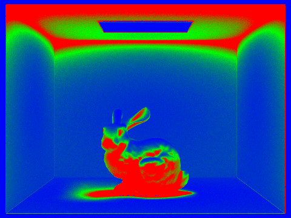 |
|
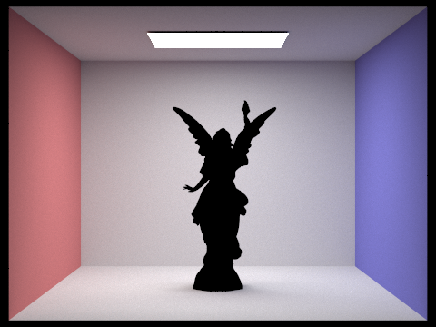 |
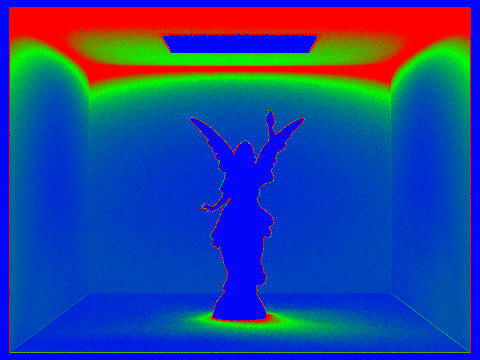 |
For both scenes, the rate maps clearly show non-uniform sampling: high-frequency geometric boundaries, contact shadows, and complex indirect-light regions consume more samples (warmer colors), while large flat wall/background areas converge earlier with fewer samples (cooler colors). This behavior matches the goal of adaptive sampling: concentrate computation where variance is high and reduce wasted work in smooth regions.